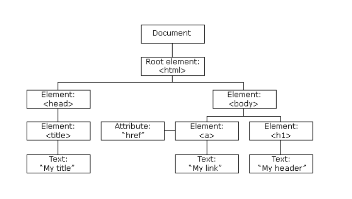

Angular es un Framework de JavaScript de código abierto escrito en TypeScript. Su objetivo principal
es
desarrollar
aplicaciones de una sola página. Google se encarga del mantenimiento y constantes actualizaciones de
mejoras
para este framework.
Versiones de Angular
Primero, estaba el Angular original, llamado Angular 1 y eventualmente conocido como AngularJS. Luego
vinieron Angular
2, 3, 4, 5, 6, 7 hasta que finalmente, la versión actual, Angular 12, lanzada el 12/05/2021. Cada
versión
posterior de Angular
mejora su predecesora, corrige errores, aborda problemas y se adapta a la creciente complejidad de
las
plataformas actuales.
Características de Angular
Document Object Model (DOM)
DOM (Document Object Model) trata un documento XML o HTML como una estructura de árbol en la
que
cada
nodo representa
una parte del documento.

TypeScript
TypeScript define un conjunto de tipos de JavaScript, lo que ayuda a los usuarios a escribir código
JavaScript que es más
fácil de entender. Todo el código TypeScript se compila con JavaScript y se puede ejecutar sin
problemas
en
cualquier plataforma.
TypeScript no es obligatorio para desarrollar una aplicación Angular. Sin embargo, es muy
recomendable
ya
que ofrece una mejor
estructura sintáctica, al tiempo que hace que la base de código sea más fácil de entender y
mantener.
Data Binding (Enlace de datos)
El enlace de datos (data binding) es un proceso que permite a los usuarios manipular elementos de la
página
web a través de
un navegador web. Emplea HTML dinámico y no requiere secuencias de comandos ni programación
complejas.
El
enlace de datos se
utiliza en páginas web que incluyen componentes interactivos, como calculadoras, tutoriales, foros y
juegos.
También permite
una mejor visualización incremental de una página web cuando las páginas contienen una gran cantidad
de
datos.
Angular usa el enlace bidireccional. El estado del modelo refleja los cambios realizados en los
elementos de
la interfaz de
suario correspondientes. Por el contrario, el estado de la interfaz de usuario refleja cualquier
cambio
en
el estado del modelo.
Esta característica permite que el marco conecte el DOM a los datos del modelo a través del
controlador.
Testing (Pruebas)
Angular usa el Framework de prueba Jasmine. Jasmine proporciona múltiples funcionalidades para
escribir
diferentes tipos
de casos de prueba. Karma es el ejecutor de tareas para las pruebas que usa un archivo de
configuración
para
configurar la
puesta en marcha, los reportes y el framework de prueba.
Arquitectura de Angular
Angular es un marco modelo-vista-controlador (MVC) completo. Proporciona una guía clara sobre cómo se
debe
estructurar
la aplicación y ofrece un flujo de datos bidireccional al tiempo que proporciona un DOM real.